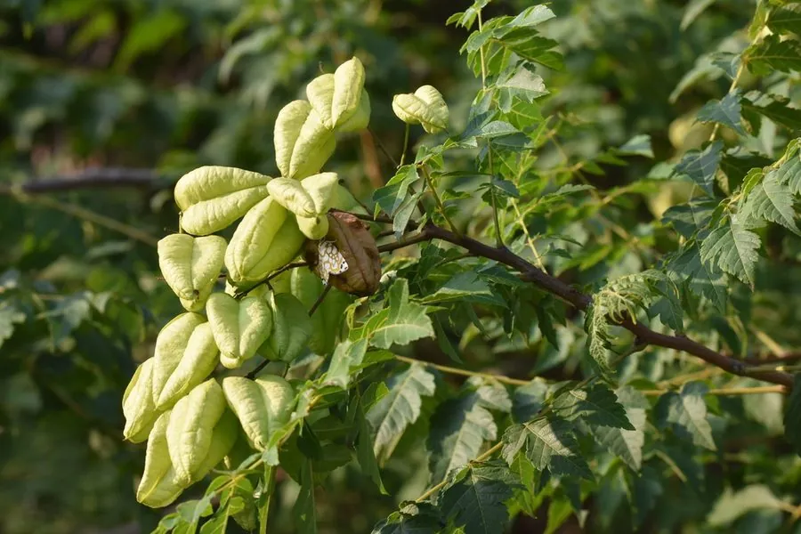

乔木 · 植物界
栾树 Koelreuteria paniculata

无患子科落叶乔木，夏季开金黄圆锥花序，秋季结灯笼状蒴果，是优良的行道树与庭荫树，中国原产。
- 分类
- 门被子植物门纲木兰纲目无患子目科无患子科属栾树属
- 栖息环境
- 海拔 1500 米以下的山坡、沟谷与平原，喜光耐寒耐旱，适应性强
- 地理分布
- 原产中国华北、华东至西南；朝鲜半岛、日本有分布，中国南北城市广泛栽培
- 保护级别
- 暂无评估；中国未列入国家重点保护野生植物名录
物种志
栾树为无患子科栾树属落叶乔木，高 15–20 米，树冠近球形，树皮灰褐色、纵裂。奇数羽状复叶或二回羽状复叶，小叶 7–15 枚，卵形至卵状披针形，边缘具不规则锯齿或浅裂。花小，金黄色，组成顶生的大型圆锥花序，花期 6–8 月；蒴果膨大如灯笼，幼时绿色，成熟后转为橙红或淡红色，内含黑色球形种子，果期 9–10 月。
栾树原产中国华北、华东及西南山地，朝鲜半岛、日本也有分布，现北京、上海、南京等城市广泛栽作行道树。它喜光、耐寒、耐旱，对土壤要求不严，耐轻度盐碱与烟尘，抗污染能力强，是城市绿化的优良树种。木材黄白色、质脆，可制小器具；花可提取黄色染料，叶可作饲料，种子可榨油并串制念珠。秋季金黄色的花序与红色灯笼果同挂枝头，观赏效果极佳。
形态与习性
- 株高15–20 m，树冠近球形
- 花期6–8 月，金黄色圆锥花序
- 果期9–10 月，蒴果灯笼状、橙红色
- 光照喜光，不耐长期荫蔽
- 水分耐旱，忌积水
- 土壤适应性强，耐轻度盐碱与烟尘
- 主要用途行道树与庭荫树，花作黄色染料，种子榨油
趣味知识
- 栾树的蒴果膨大中空，形似小灯笼，因此有“灯笼树”之称。
- 栾树的花可提取黄色染料，古代用于染布。
- 栾树秋季花果同枝，金黄与橙红相映，是城市秋景的重要树种。
- 栾树的种子黑色坚硬，民间常串成念珠把玩。